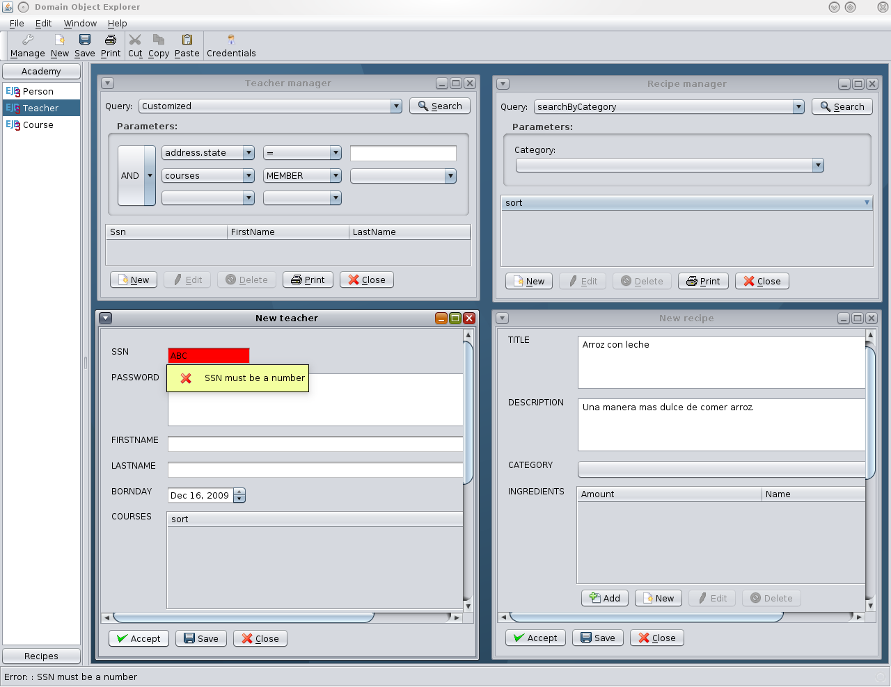
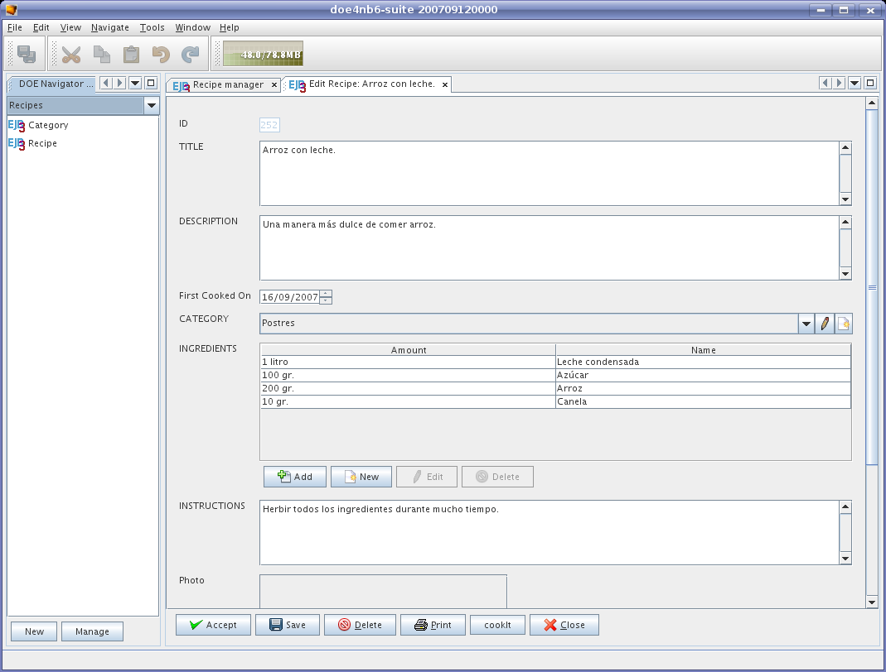

Domain Object Explorer for EJB3 entity beans
|
Domain Object Explorer for EJB3 entity beans
|
The "Domain Object Explorer" is a desktop application that auto-generates the user interface for your EJB3 entity beans at runtime, without needing of UI programming (like Naked Objects, JMatter, ...). It can also be deployed as a JavaEE 5 application client into GlassFish v2 application server to centrally manage datasource configuration, update persistence units, and deliver application to users via Java Web Start technology.
- Project Name: doe
- Latest Release: None
- Latest Release Status: Pre-Alpha
- Project Type: Java Web Start application client
- License: Common Development and Distribution License (CDDL) Version 1.0
- Features
- Download
- Installation guide
- Usage Instructions
- Screenshot
- Developer's guide
- Support
- Participation
- Roadmap
- Revision History
- Pros:
- Rich user interface to manage and test your JPA/EJB3 entity beans.
- Application and persistence units updates can be delivered to users via Java Web Start technology.
- Data sources can be centrally configured from application server administrative console.
- Doesn't need complex HTML, JavaScript, nor AJAX handlers on server-side.
- ...
- Cons:
- Deployed aplications are really big (about 45Mb).
- Rude printing support.
- ...
There is no stable version, yet. But you can download preview releases from Document & files or CVS, where you will find the following projects for NetBeans IDE 6:
Also, there are the following example modules:
- "doe4ejb3": it's the core library.
- "doe4ejb3-app-client": it's a Java EE 5 application client (that can be included in the users's enterprise application).
- "doe4nb6": simple integration module for NetBeans Platform 6.
- "doe4ejb3-test-ejb3": sample EJB3 entity beans (some are based on "trails" demos).
- "doe4ejb3-test-app" : sample enterprise application project that includes the "doe" application client to manage the previous "EJB3" entities.
- Download, install and start GlassFish v2 application server.
- Include the "doe4ejb3-app-client" into your Java EE 5 application.
- Specify EJB3 entity class names in your "META-INF/persistence.xml" descriptors.
- Assemble all modules into an EAR archive, and deploy to the application server.
- Note: if you want to test "doe" with the sample EJB3 entities, you should create a database for the tests, configure the connection parameters in GlassFish administration console (the JDBC datasource should be named "jdbc/doe4ejb3"), then open the "doe4ejb3-test-app" project with NetBeans 6.0, and deploy into the application server.
- See the instructions below.
You can easily launch the "doe" application client from GlassFish administrative console (after installation, you can also start it from Java Web Start viewer). The application has the following features:Create a new entity object:
Open the "File" menu, select "New" option, the name of the persistence unit, and the class name of the EJB3 entity to be created. Then complete the entity properties and press the "Accept" button to persist the entity.Search entity beans:
On the left panel, select the persistence unit to view its EJB3 entity classes, and double click with left button on the desired class to open the entity manager window on the desktop. Then select the query type (to search "All" objects, or use a custom/named query). With "custom" or "named" queries, you also have to complete the required parameters. Finally, press the "Search" button, and wait for the results (note the "done" indicator in the status bar).Browse/edit an object:
Select one of the objects found, and click the "Edit" button from the manager window to view the entity details on the right panel (desktop). You can navigate to related entities, and modify its properties (to persist changes, remember to press the "Save" or "Accept" button on the modified entity details).Print the objects:
Use the "Print" button from the manager/detail window, configure the printing dialog, and click the "Print" button to confirm.Delete an object:
Select the undesired objects, click "Delete" button from the manager/detail window, and confirm the deletion in the next window popup.
Standalone:
Integrated with NetBeans Platform 6:

Defining custom queries for an entity:
The "doe" application can search entities using the "named queries" defined for an EJB3 entity bean.@Entity @NamedQueries({ @NamedQuery(name="searchPublished", query="SELECT OBJECT(r) FROM Recipe r WHERE r.published = true"), @NamedQuery(name="searchByCategory", query="SELECT OBJECT(r) FROM Recipe r WHERE r.category = :category") }) public class Recipe implements java.io.Serializable { @Id @GeneratedValue(strategy=GenerationType.AUTO) public Integer id; @Column(name="TITLE", nullable=false, unique=true, length=100) public String title; @Column(name="PUBLISHED", nullable=true) public boolean published; @ManyToOne public Category category; ... }
Defining custom actions for an entity:
When "doe" application opens an existing entity, it will display additional buttons for each public method annotated with "@org.jdesktop.application.Action" attribute (jsr-296). The default presentation properties of actions defined this way are initialized automatically from their class's ResourceBundle. Developers can use org.doe4ejb3.util.DOEUtil and org.doe4ejb3.gui.WindowManager for user interaction. For example:@Entity public class Recipe implements java.io.Serializable { .... @Action public void cookIt() { DOEUtils.getWindowManager().showMessageDialog( "Ready to eat.", "CookIt result", JOptionPane.INFORMATION_MESSAGE); } .... }
Customize user interface for an entity:
The "doe" application can auto-generate the UI at runtime, but developers can also customize entity editors in many ways:
- Using @PropertyDescriptor annotation:
The @org.doe4ejb3.annotation.PropertyDescriptor annotation allows simple customization of the UI controls for the properties (to change labels, the order of fields, ...). For example:... @Column(name="name", length=50) @PropertyDescriptor(index=1, displayName="Full name:") public String name; ...
- Using Abeille forms:
You can design the complete UI of an entity editor with Abeille Forms Designer, and copy the generated xml or jfrm file in the same directory/name of the entity class. To bind entity properties with the UI, developers have to design the forms with the apropiate control types (or JPanel container), and to name them as the respective properties names. When the control belongs to an embbedded entity property, use the dot symbol to separate the embedded entity name of the associated property name.
- Using compiled Swing UI:
You can also use your favourite GUI builder (like NetBeans IDE) to design the complete Swing UI layout for an entity editor. The class representing the UI should be inherited from JPanel, the class name must be specified in the entity class with @org.doe4ejb3.annotation.EntityDescriptor(layoutClassName="uiClassName") annotation, and the UI class must be packaged in the same persistence unit "jar" as the entity class. To bind entity properties with the UI, developers have to design the forms with the apropiate control types (or JPanel container), and publish them as public fields with a similar name in the form class. When the control belongs to an embbedded entity property, use the "_" symbol to separate the embedded entity name of the associated property name. For example:
Entity class: UI code: ... @Entity @EntityDescriptor(layoutClassName="myNS.PersonEditor") public class Person implements Serializable { @Id @Column(name="ssn", length=20) public String ssn; @Column(name="name", length=50) public String name; @Column(name="bornDay") public java.sql.Date bornDay; ... }package myNS; ... public class PersonEditor extends javax.swing.JPanel { public JTextField jTextField_ssn; public JTextField jTextField_name; public JPanel jPanel_bornDay; /** Creates new form PersonEditor */ public PersonEditor() { initComponents(); } private void initComponents() { // generated UI code jTextField_ssn = new JTextField(); jTextField_name = new JTextField(); jPanel_bornDay = new JPanel(); ... } }
I hope the "doe" project will be a community-supported open-source product, and you could find support by subscribing to user mailing list.
Everybody is welcome to participate with "doe" project.
The application can sure be improved in many ways.
Any volunteers and suggestions?
Future roadmap for the "doe" application ("to do" task list):
- English corrections and better i18n support (but I don't speak English ;-).
- Improve "GUI" (menus, toolbars, icons, better navigation, better custom queries support, fix some copy&paste operations, more drag&drop operations, ...).
- Allow user extensions/plugins to add new actions/menus for entity objects.
- Create custom editors for common property types (image viewers/loaders, dates, etc.)
- Better printing support.
- GUI API for customized actions in EJB3 entity beans.
- Load/unload of persistence units.
- More sample applications.
- NetBeans Platform module improvements.
- Version 0.2 - [Alpha version - CVS head]
- Improved UI.
- Cut, copy & paste operations.
- Drag & drop operations.
- Basic printing support.
- Custom queries in search panel.
- Custom actions in entity editor.
- Custom layout in entity editor (compiled Swing UI, or Abeille forms).
- Allows client authentication with databases.
- API migration to jsr-295 (beans binding) and jsr-296 (swing application framework).
- Many bug fixes.
- Version 0.1 - [Pre-Alpha version imported in CVS - 2006/09/27]
- Open source release to java.net.
- Simple search/view/edition of EJB3 entity objects.

{kind=link}
{kind=link}